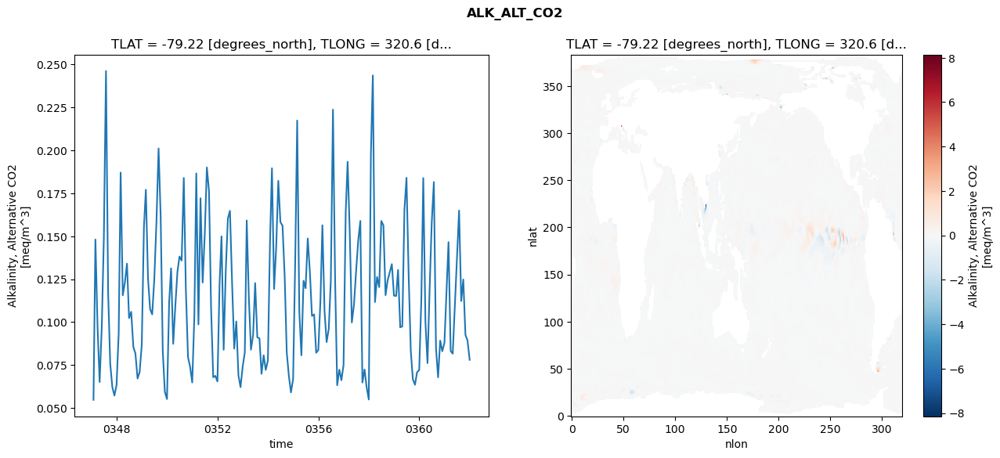
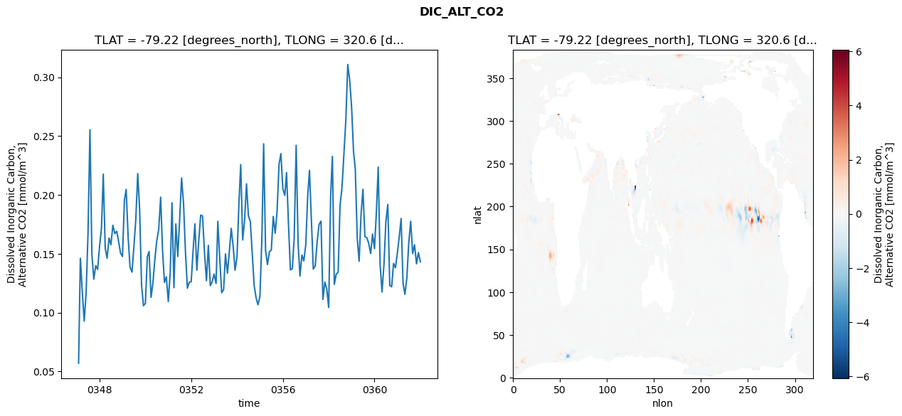
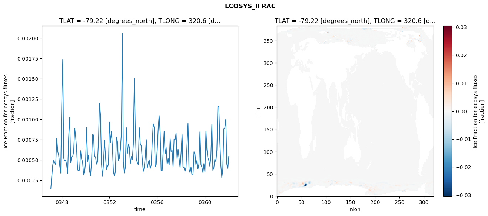
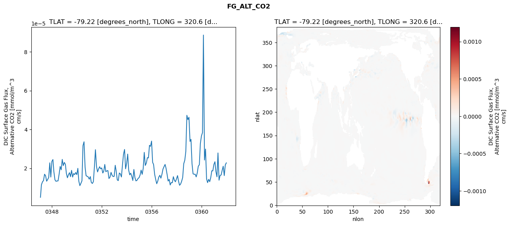

glb-dor_North_Atlantic_basin_018_1999-01-01_00072#
Simulation details#
Case: smyle.cdr-atlas-v0.glb-dor_North_Atlantic_basin_018_1999-01-01_00072.001
Basin: North_Atlantic_basin
Polygon: 18.0
Start date: 1999-01
Show code cell source Hide code cell source
import xarray as xr
import matplotlib.pyplot as plt
Show code cell source Hide code cell source
zarr_store = "/path/to/zarr/store"
# Parameters
zarr_store = "/global/cfs/projectdirs/m4746/Projects/Ocean-CDR-Atlas-v0/data/validation/smyle.cdr-atlas-v0.glb-dor_North_Atlantic_basin_018_1999-01-01_00072.001.validation.zarr"
Show code cell source Hide code cell source
%%time
ds_o = xr.open_zarr(zarr_store).compute()
ds_o
CPU times: user 700 ms, sys: 449 ms, total: 1.15 s
Wall time: 1.45 s
<xarray.Dataset> Size: 2MB
Dimensions: (nlat: 384, nlon: 320, time: 180)
Coordinates:
TLAT float64 8B -79.22
TLONG float64 8B 320.6
ULAT float64 8B -78.95
ULONG float64 8B 321.1
* time (time) object 1kB 0347-02-01 00:00:00 ... 0362-01-01 0...
z_t float32 4B 500.0
Dimensions without coordinates: nlat, nlon
Data variables:
ALK_ALT_CO2_diff (nlat, nlon) float32 492kB nan nan nan ... nan nan nan
ALK_ALT_CO2_rmse (time) float64 1kB 0.05477 0.1481 ... 0.08935 0.07808
DIC_ALT_CO2_diff (nlat, nlon) float32 492kB nan nan nan ... nan nan nan
DIC_ALT_CO2_rmse (time) float64 1kB 0.05707 0.1462 0.1173 ... 0.151 0.1433
ECOSYS_IFRAC_diff (nlat, nlon) float32 492kB nan nan nan ... nan nan nan
ECOSYS_IFRAC_rmse (time) float64 1kB 0.0001489 0.0002929 ... 0.0005469
FG_ALT_CO2_diff (nlat, nlon) float32 492kB nan nan nan ... nan nan nan
FG_ALT_CO2_rmse (time) float64 1kB 5.071e-06 1.154e-05 ... 2.282e-05xarray.Dataset
- nlat: 384
- nlon: 320
- time: 180
- TLAT()float64-79.22
- long_name :
- array of t-grid latitudes
- units :
- degrees_north
array(-79.22052261)
- TLONG()float64320.6
- long_name :
- array of t-grid longitudes
- units :
- degrees_east
array(320.56250892)
- ULAT()float64-78.95
- long_name :
- array of u-grid latitudes
- units :
- degrees_north
array(-78.95289509)
- ULONG()float64321.1
- long_name :
- array of u-grid longitudes
- units :
- degrees_east
array(321.12500894)
- time(time)object0347-02-01 00:00:00 ... 0362-01-...
- bounds :
- time_bound
- long_name :
- time
array([cftime.DatetimeNoLeap(347, 2, 1, 0, 0, 0, 0, has_year_zero=True), cftime.DatetimeNoLeap(347, 3, 1, 0, 0, 0, 0, has_year_zero=True), cftime.DatetimeNoLeap(347, 4, 1, 0, 0, 0, 0, has_year_zero=True), cftime.DatetimeNoLeap(347, 5, 1, 0, 0, 0, 0, has_year_zero=True), cftime.DatetimeNoLeap(347, 6, 1, 0, 0, 0, 0, has_year_zero=True), cftime.DatetimeNoLeap(347, 7, 1, 0, 0, 0, 0, has_year_zero=True), cftime.DatetimeNoLeap(347, 8, 1, 0, 0, 0, 0, has_year_zero=True), cftime.DatetimeNoLeap(347, 9, 1, 0, 0, 0, 0, has_year_zero=True), cftime.DatetimeNoLeap(347, 10, 1, 0, 0, 0, 0, has_year_zero=True), cftime.DatetimeNoLeap(347, 11, 1, 0, 0, 0, 0, has_year_zero=True), cftime.DatetimeNoLeap(347, 12, 1, 0, 0, 0, 0, has_year_zero=True), cftime.DatetimeNoLeap(348, 1, 1, 0, 0, 0, 0, has_year_zero=True), cftime.DatetimeNoLeap(348, 2, 1, 0, 0, 0, 0, has_year_zero=True), cftime.DatetimeNoLeap(348, 3, 1, 0, 0, 0, 0, has_year_zero=True), cftime.DatetimeNoLeap(348, 4, 1, 0, 0, 0, 0, has_year_zero=True), cftime.DatetimeNoLeap(348, 5, 1, 0, 0, 0, 0, has_year_zero=True), cftime.DatetimeNoLeap(348, 6, 1, 0, 0, 0, 0, has_year_zero=True), cftime.DatetimeNoLeap(348, 7, 1, 0, 0, 0, 0, has_year_zero=True), cftime.DatetimeNoLeap(348, 8, 1, 0, 0, 0, 0, has_year_zero=True), cftime.DatetimeNoLeap(348, 9, 1, 0, 0, 0, 0, has_year_zero=True), cftime.DatetimeNoLeap(348, 10, 1, 0, 0, 0, 0, has_year_zero=True), cftime.DatetimeNoLeap(348, 11, 1, 0, 0, 0, 0, has_year_zero=True), cftime.DatetimeNoLeap(348, 12, 1, 0, 0, 0, 0, has_year_zero=True), cftime.DatetimeNoLeap(349, 1, 1, 0, 0, 0, 0, has_year_zero=True), cftime.DatetimeNoLeap(349, 2, 1, 0, 0, 0, 0, has_year_zero=True), cftime.DatetimeNoLeap(349, 3, 1, 0, 0, 0, 0, has_year_zero=True), cftime.DatetimeNoLeap(349, 4, 1, 0, 0, 0, 0, has_year_zero=True), cftime.DatetimeNoLeap(349, 5, 1, 0, 0, 0, 0, has_year_zero=True), cftime.DatetimeNoLeap(349, 6, 1, 0, 0, 0, 0, has_year_zero=True), cftime.DatetimeNoLeap(349, 7, 1, 0, 0, 0, 0, has_year_zero=True), cftime.DatetimeNoLeap(349, 8, 1, 0, 0, 0, 0, has_year_zero=True), cftime.DatetimeNoLeap(349, 9, 1, 0, 0, 0, 0, has_year_zero=True), cftime.DatetimeNoLeap(349, 10, 1, 0, 0, 0, 0, has_year_zero=True), cftime.DatetimeNoLeap(349, 11, 1, 0, 0, 0, 0, has_year_zero=True), cftime.DatetimeNoLeap(349, 12, 1, 0, 0, 0, 0, has_year_zero=True), cftime.DatetimeNoLeap(350, 1, 1, 0, 0, 0, 0, has_year_zero=True), cftime.DatetimeNoLeap(350, 2, 1, 0, 0, 0, 0, has_year_zero=True), cftime.DatetimeNoLeap(350, 3, 1, 0, 0, 0, 0, has_year_zero=True), cftime.DatetimeNoLeap(350, 4, 1, 0, 0, 0, 0, has_year_zero=True), cftime.DatetimeNoLeap(350, 5, 1, 0, 0, 0, 0, has_year_zero=True), cftime.DatetimeNoLeap(350, 6, 1, 0, 0, 0, 0, has_year_zero=True), cftime.DatetimeNoLeap(350, 7, 1, 0, 0, 0, 0, has_year_zero=True), cftime.DatetimeNoLeap(350, 8, 1, 0, 0, 0, 0, has_year_zero=True), cftime.DatetimeNoLeap(350, 9, 1, 0, 0, 0, 0, has_year_zero=True), cftime.DatetimeNoLeap(350, 10, 1, 0, 0, 0, 0, has_year_zero=True), cftime.DatetimeNoLeap(350, 11, 1, 0, 0, 0, 0, has_year_zero=True), cftime.DatetimeNoLeap(350, 12, 1, 0, 0, 0, 0, has_year_zero=True), cftime.DatetimeNoLeap(351, 1, 1, 0, 0, 0, 0, has_year_zero=True), cftime.DatetimeNoLeap(351, 2, 1, 0, 0, 0, 0, has_year_zero=True), cftime.DatetimeNoLeap(351, 3, 1, 0, 0, 0, 0, has_year_zero=True), cftime.DatetimeNoLeap(351, 4, 1, 0, 0, 0, 0, has_year_zero=True), cftime.DatetimeNoLeap(351, 5, 1, 0, 0, 0, 0, has_year_zero=True), cftime.DatetimeNoLeap(351, 6, 1, 0, 0, 0, 0, has_year_zero=True), cftime.DatetimeNoLeap(351, 7, 1, 0, 0, 0, 0, has_year_zero=True), cftime.DatetimeNoLeap(351, 8, 1, 0, 0, 0, 0, has_year_zero=True), cftime.DatetimeNoLeap(351, 9, 1, 0, 0, 0, 0, has_year_zero=True), cftime.DatetimeNoLeap(351, 10, 1, 0, 0, 0, 0, has_year_zero=True), cftime.DatetimeNoLeap(351, 11, 1, 0, 0, 0, 0, has_year_zero=True), cftime.DatetimeNoLeap(351, 12, 1, 0, 0, 0, 0, has_year_zero=True), cftime.DatetimeNoLeap(352, 1, 1, 0, 0, 0, 0, has_year_zero=True), cftime.DatetimeNoLeap(352, 2, 1, 0, 0, 0, 0, has_year_zero=True), cftime.DatetimeNoLeap(352, 3, 1, 0, 0, 0, 0, has_year_zero=True), cftime.DatetimeNoLeap(352, 4, 1, 0, 0, 0, 0, has_year_zero=True), cftime.DatetimeNoLeap(352, 5, 1, 0, 0, 0, 0, has_year_zero=True), cftime.DatetimeNoLeap(352, 6, 1, 0, 0, 0, 0, has_year_zero=True), cftime.DatetimeNoLeap(352, 7, 1, 0, 0, 0, 0, has_year_zero=True), cftime.DatetimeNoLeap(352, 8, 1, 0, 0, 0, 0, has_year_zero=True), cftime.DatetimeNoLeap(352, 9, 1, 0, 0, 0, 0, has_year_zero=True), cftime.DatetimeNoLeap(352, 10, 1, 0, 0, 0, 0, has_year_zero=True), cftime.DatetimeNoLeap(352, 11, 1, 0, 0, 0, 0, has_year_zero=True), cftime.DatetimeNoLeap(352, 12, 1, 0, 0, 0, 0, has_year_zero=True), cftime.DatetimeNoLeap(353, 1, 1, 0, 0, 0, 0, has_year_zero=True), cftime.DatetimeNoLeap(353, 2, 1, 0, 0, 0, 0, has_year_zero=True), cftime.DatetimeNoLeap(353, 3, 1, 0, 0, 0, 0, has_year_zero=True), cftime.DatetimeNoLeap(353, 4, 1, 0, 0, 0, 0, has_year_zero=True), cftime.DatetimeNoLeap(353, 5, 1, 0, 0, 0, 0, has_year_zero=True), cftime.DatetimeNoLeap(353, 6, 1, 0, 0, 0, 0, has_year_zero=True), cftime.DatetimeNoLeap(353, 7, 1, 0, 0, 0, 0, has_year_zero=True), cftime.DatetimeNoLeap(353, 8, 1, 0, 0, 0, 0, has_year_zero=True), cftime.DatetimeNoLeap(353, 9, 1, 0, 0, 0, 0, has_year_zero=True), cftime.DatetimeNoLeap(353, 10, 1, 0, 0, 0, 0, has_year_zero=True), cftime.DatetimeNoLeap(353, 11, 1, 0, 0, 0, 0, has_year_zero=True), cftime.DatetimeNoLeap(353, 12, 1, 0, 0, 0, 0, has_year_zero=True), cftime.DatetimeNoLeap(354, 1, 1, 0, 0, 0, 0, has_year_zero=True), cftime.DatetimeNoLeap(354, 2, 1, 0, 0, 0, 0, has_year_zero=True), cftime.DatetimeNoLeap(354, 3, 1, 0, 0, 0, 0, has_year_zero=True), cftime.DatetimeNoLeap(354, 4, 1, 0, 0, 0, 0, has_year_zero=True), cftime.DatetimeNoLeap(354, 5, 1, 0, 0, 0, 0, has_year_zero=True), cftime.DatetimeNoLeap(354, 6, 1, 0, 0, 0, 0, has_year_zero=True), cftime.DatetimeNoLeap(354, 7, 1, 0, 0, 0, 0, has_year_zero=True), cftime.DatetimeNoLeap(354, 8, 1, 0, 0, 0, 0, has_year_zero=True), cftime.DatetimeNoLeap(354, 9, 1, 0, 0, 0, 0, has_year_zero=True), cftime.DatetimeNoLeap(354, 10, 1, 0, 0, 0, 0, has_year_zero=True), cftime.DatetimeNoLeap(354, 11, 1, 0, 0, 0, 0, has_year_zero=True), cftime.DatetimeNoLeap(354, 12, 1, 0, 0, 0, 0, has_year_zero=True), cftime.DatetimeNoLeap(355, 1, 1, 0, 0, 0, 0, has_year_zero=True), cftime.DatetimeNoLeap(355, 2, 1, 0, 0, 0, 0, has_year_zero=True), cftime.DatetimeNoLeap(355, 3, 1, 0, 0, 0, 0, has_year_zero=True), cftime.DatetimeNoLeap(355, 4, 1, 0, 0, 0, 0, has_year_zero=True), cftime.DatetimeNoLeap(355, 5, 1, 0, 0, 0, 0, has_year_zero=True), cftime.DatetimeNoLeap(355, 6, 1, 0, 0, 0, 0, has_year_zero=True), cftime.DatetimeNoLeap(355, 7, 1, 0, 0, 0, 0, has_year_zero=True), cftime.DatetimeNoLeap(355, 8, 1, 0, 0, 0, 0, has_year_zero=True), cftime.DatetimeNoLeap(355, 9, 1, 0, 0, 0, 0, has_year_zero=True), cftime.DatetimeNoLeap(355, 10, 1, 0, 0, 0, 0, has_year_zero=True), cftime.DatetimeNoLeap(355, 11, 1, 0, 0, 0, 0, has_year_zero=True), cftime.DatetimeNoLeap(355, 12, 1, 0, 0, 0, 0, has_year_zero=True), cftime.DatetimeNoLeap(356, 1, 1, 0, 0, 0, 0, has_year_zero=True), cftime.DatetimeNoLeap(356, 2, 1, 0, 0, 0, 0, has_year_zero=True), cftime.DatetimeNoLeap(356, 3, 1, 0, 0, 0, 0, has_year_zero=True), cftime.DatetimeNoLeap(356, 4, 1, 0, 0, 0, 0, has_year_zero=True), cftime.DatetimeNoLeap(356, 5, 1, 0, 0, 0, 0, has_year_zero=True), cftime.DatetimeNoLeap(356, 6, 1, 0, 0, 0, 0, has_year_zero=True), cftime.DatetimeNoLeap(356, 7, 1, 0, 0, 0, 0, has_year_zero=True), cftime.DatetimeNoLeap(356, 8, 1, 0, 0, 0, 0, has_year_zero=True), cftime.DatetimeNoLeap(356, 9, 1, 0, 0, 0, 0, has_year_zero=True), cftime.DatetimeNoLeap(356, 10, 1, 0, 0, 0, 0, has_year_zero=True), cftime.DatetimeNoLeap(356, 11, 1, 0, 0, 0, 0, has_year_zero=True), cftime.DatetimeNoLeap(356, 12, 1, 0, 0, 0, 0, has_year_zero=True), cftime.DatetimeNoLeap(357, 1, 1, 0, 0, 0, 0, has_year_zero=True), cftime.DatetimeNoLeap(357, 2, 1, 0, 0, 0, 0, has_year_zero=True), cftime.DatetimeNoLeap(357, 3, 1, 0, 0, 0, 0, has_year_zero=True), cftime.DatetimeNoLeap(357, 4, 1, 0, 0, 0, 0, has_year_zero=True), cftime.DatetimeNoLeap(357, 5, 1, 0, 0, 0, 0, has_year_zero=True), cftime.DatetimeNoLeap(357, 6, 1, 0, 0, 0, 0, has_year_zero=True), cftime.DatetimeNoLeap(357, 7, 1, 0, 0, 0, 0, has_year_zero=True), cftime.DatetimeNoLeap(357, 8, 1, 0, 0, 0, 0, has_year_zero=True), cftime.DatetimeNoLeap(357, 9, 1, 0, 0, 0, 0, has_year_zero=True), cftime.DatetimeNoLeap(357, 10, 1, 0, 0, 0, 0, has_year_zero=True), cftime.DatetimeNoLeap(357, 11, 1, 0, 0, 0, 0, has_year_zero=True), cftime.DatetimeNoLeap(357, 12, 1, 0, 0, 0, 0, has_year_zero=True), cftime.DatetimeNoLeap(358, 1, 1, 0, 0, 0, 0, has_year_zero=True), cftime.DatetimeNoLeap(358, 2, 1, 0, 0, 0, 0, has_year_zero=True), cftime.DatetimeNoLeap(358, 3, 1, 0, 0, 0, 0, has_year_zero=True), cftime.DatetimeNoLeap(358, 4, 1, 0, 0, 0, 0, has_year_zero=True), cftime.DatetimeNoLeap(358, 5, 1, 0, 0, 0, 0, has_year_zero=True), cftime.DatetimeNoLeap(358, 6, 1, 0, 0, 0, 0, has_year_zero=True), cftime.DatetimeNoLeap(358, 7, 1, 0, 0, 0, 0, has_year_zero=True), cftime.DatetimeNoLeap(358, 8, 1, 0, 0, 0, 0, has_year_zero=True), cftime.DatetimeNoLeap(358, 9, 1, 0, 0, 0, 0, has_year_zero=True), cftime.DatetimeNoLeap(358, 10, 1, 0, 0, 0, 0, has_year_zero=True), cftime.DatetimeNoLeap(358, 11, 1, 0, 0, 0, 0, has_year_zero=True), cftime.DatetimeNoLeap(358, 12, 1, 0, 0, 0, 0, has_year_zero=True), cftime.DatetimeNoLeap(359, 1, 1, 0, 0, 0, 0, has_year_zero=True), cftime.DatetimeNoLeap(359, 2, 1, 0, 0, 0, 0, has_year_zero=True), cftime.DatetimeNoLeap(359, 3, 1, 0, 0, 0, 0, has_year_zero=True), cftime.DatetimeNoLeap(359, 4, 1, 0, 0, 0, 0, has_year_zero=True), cftime.DatetimeNoLeap(359, 5, 1, 0, 0, 0, 0, has_year_zero=True), cftime.DatetimeNoLeap(359, 6, 1, 0, 0, 0, 0, has_year_zero=True), cftime.DatetimeNoLeap(359, 7, 1, 0, 0, 0, 0, has_year_zero=True), cftime.DatetimeNoLeap(359, 8, 1, 0, 0, 0, 0, has_year_zero=True), cftime.DatetimeNoLeap(359, 9, 1, 0, 0, 0, 0, has_year_zero=True), cftime.DatetimeNoLeap(359, 10, 1, 0, 0, 0, 0, has_year_zero=True), cftime.DatetimeNoLeap(359, 11, 1, 0, 0, 0, 0, has_year_zero=True), cftime.DatetimeNoLeap(359, 12, 1, 0, 0, 0, 0, has_year_zero=True), cftime.DatetimeNoLeap(360, 1, 1, 0, 0, 0, 0, has_year_zero=True), cftime.DatetimeNoLeap(360, 2, 1, 0, 0, 0, 0, has_year_zero=True), cftime.DatetimeNoLeap(360, 3, 1, 0, 0, 0, 0, has_year_zero=True), cftime.DatetimeNoLeap(360, 4, 1, 0, 0, 0, 0, has_year_zero=True), cftime.DatetimeNoLeap(360, 5, 1, 0, 0, 0, 0, has_year_zero=True), cftime.DatetimeNoLeap(360, 6, 1, 0, 0, 0, 0, has_year_zero=True), cftime.DatetimeNoLeap(360, 7, 1, 0, 0, 0, 0, has_year_zero=True), cftime.DatetimeNoLeap(360, 8, 1, 0, 0, 0, 0, has_year_zero=True), cftime.DatetimeNoLeap(360, 9, 1, 0, 0, 0, 0, has_year_zero=True), cftime.DatetimeNoLeap(360, 10, 1, 0, 0, 0, 0, has_year_zero=True), cftime.DatetimeNoLeap(360, 11, 1, 0, 0, 0, 0, has_year_zero=True), cftime.DatetimeNoLeap(360, 12, 1, 0, 0, 0, 0, has_year_zero=True), cftime.DatetimeNoLeap(361, 1, 1, 0, 0, 0, 0, has_year_zero=True), cftime.DatetimeNoLeap(361, 2, 1, 0, 0, 0, 0, has_year_zero=True), cftime.DatetimeNoLeap(361, 3, 1, 0, 0, 0, 0, has_year_zero=True), cftime.DatetimeNoLeap(361, 4, 1, 0, 0, 0, 0, has_year_zero=True), cftime.DatetimeNoLeap(361, 5, 1, 0, 0, 0, 0, has_year_zero=True), cftime.DatetimeNoLeap(361, 6, 1, 0, 0, 0, 0, has_year_zero=True), cftime.DatetimeNoLeap(361, 7, 1, 0, 0, 0, 0, has_year_zero=True), cftime.DatetimeNoLeap(361, 8, 1, 0, 0, 0, 0, has_year_zero=True), cftime.DatetimeNoLeap(361, 9, 1, 0, 0, 0, 0, has_year_zero=True), cftime.DatetimeNoLeap(361, 10, 1, 0, 0, 0, 0, has_year_zero=True), cftime.DatetimeNoLeap(361, 11, 1, 0, 0, 0, 0, has_year_zero=True), cftime.DatetimeNoLeap(361, 12, 1, 0, 0, 0, 0, has_year_zero=True), cftime.DatetimeNoLeap(362, 1, 1, 0, 0, 0, 0, has_year_zero=True)], dtype=object) - z_t()float32500.0
- long_name :
- depth from surface to midpoint of layer
- positive :
- down
- units :
- centimeters
- valid_max :
- 537500.0
- valid_min :
- 500.0
array(500., dtype=float32)
- ALK_ALT_CO2_diff(nlat, nlon)float32nan nan nan nan ... nan nan nan nan
- cell_methods :
- time: mean
- grid_loc :
- 3111
- long_name :
- Alkalinity, Alternative CO2
- units :
- meq/m^3
array([[ nan, nan, nan, ..., nan, nan, nan], [ nan, nan, nan, ..., nan, nan, nan], [ 0.00634766, -0.03881836, -0.04345703, ..., nan, nan, nan], ..., [ nan, nan, nan, ..., nan, nan, nan], [ nan, nan, nan, ..., nan, nan, nan], [ nan, nan, nan, ..., nan, nan, nan]], dtype=float32) - ALK_ALT_CO2_rmse(time)float640.05477 0.1481 ... 0.08935 0.07808
- cell_methods :
- time: mean
- grid_loc :
- 3111
- long_name :
- Alkalinity, Alternative CO2
- units :
- meq/m^3
array([0.05476772, 0.14811837, 0.09716543, 0.06513857, 0.09719776, 0.14887306, 0.24622271, 0.11748366, 0.07594756, 0.06215087, 0.05726864, 0.06336615, 0.09359127, 0.18710946, 0.11561692, 0.12300549, 0.13406552, 0.10234032, 0.10603111, 0.08555193, 0.08176982, 0.06717225, 0.07094703, 0.08698695, 0.15526065, 0.17710585, 0.12571809, 0.10765188, 0.1045371 , 0.12488492, 0.15786911, 0.20113832, 0.16216281, 0.08290053, 0.05942373, 0.05523915, 0.11160136, 0.13134131, 0.08739518, 0.10907644, 0.12930458, 0.13823234, 0.13585539, 0.1839782 , 0.11901696, 0.07967129, 0.07406843, 0.06486969, 0.10348182, 0.18659866, 0.09868719, 0.17214582, 0.12307566, 0.15054072, 0.19008573, 0.17628902, 0.10816146, 0.06791285, 0.0687461 , 0.06546433, 0.12271556, 0.14998051, 0.08391342, 0.12955492, 0.1604157 , 0.16480454, 0.12281813, 0.08461945, 0.1004144 , 0.06890112, 0.06218841, 0.07404574, 0.08234965, 0.15921004, 0.11382703, 0.08398057, 0.09240657, 0.1227494 , 0.09115293, 0.09058878, 0.06995681, 0.08070044, 0.07219374, 0.07767133, 0.14748916, 0.18961844, 0.11931081, 0.14345764, 0.18229486, 0.15827692, 0.15613642, 0.12671673, 0.08242615, 0.06860457, 0.05911173, 0.06691549, 0.13692829, 0.21740975, 0.10595443, 0.08069928, 0.1241048 , 0.11975933, 0.14874649, 0.12912279, 0.10361353, 0.1045081 , 0.08217331, 0.08383792, 0.11315446, 0.15644131, 0.10625481, 0.08842037, 0.09610941, 0.1243456 , 0.22374934, 0.12446586, 0.06327878, 0.07232627, 0.06622143, 0.07514219, 0.16361777, 0.19336457, 0.15191516, 0.09983942, 0.11019691, 0.12920002, 0.14737056, 0.15893916, 0.06485585, 0.0724347 , 0.06219835, 0.05495606, 0.19825402, 0.2436774 , 0.11172 , 0.12629448, 0.12042134, 0.15892102, 0.15638981, 0.11571488, 0.12435564, 0.12905321, 0.13377308, 0.11545223, 0.11523727, 0.13042595, 0.09703077, 0.09749074, 0.16516662, 0.18404408, 0.12778308, 0.08329872, 0.06676202, 0.06353682, 0.07087949, 0.07210735, 0.11372113, 0.18390125, 0.10015085, 0.07613303, 0.11956028, 0.15784586, 0.18155911, 0.08491843, 0.0678773 , 0.08927175, 0.08304856, 0.08791665, 0.1188663 , 0.1466001 , 0.08323933, 0.08167053, 0.10995551, 0.13648685, 0.16499164, 0.11228449, 0.12482497, 0.09262814, 0.08935015, 0.07807515]) - DIC_ALT_CO2_diff(nlat, nlon)float32nan nan nan nan ... nan nan nan nan
- cell_methods :
- time: mean
- grid_loc :
- 3111
- long_name :
- Dissolved Inorganic Carbon, Alternative CO2
- units :
- mmol/m^3
array([[ nan, nan, nan, ..., nan, nan, nan], [ nan, nan, nan, ..., nan, nan, nan], [-0.00927734, -0.06225586, -0.06616211, ..., nan, nan, nan], ..., [ nan, nan, nan, ..., nan, nan, nan], [ nan, nan, nan, ..., nan, nan, nan], [ nan, nan, nan, ..., nan, nan, nan]], dtype=float32) - DIC_ALT_CO2_rmse(time)float640.05707 0.1462 ... 0.151 0.1433
- cell_methods :
- time: mean
- grid_loc :
- 3111
- long_name :
- Dissolved Inorganic Carbon, Alternative CO2
- units :
- mmol/m^3
array([0.05707151, 0.14618877, 0.11731539, 0.09274938, 0.11699846, 0.16751508, 0.25538223, 0.14922669, 0.12845265, 0.13992474, 0.13671696, 0.15634387, 0.17219548, 0.21763523, 0.15490064, 0.1462687 , 0.16346164, 0.15771368, 0.17423442, 0.16719723, 0.16916456, 0.16025808, 0.15062679, 0.14774961, 0.19566905, 0.20471694, 0.16419223, 0.1388962 , 0.13438534, 0.15525763, 0.17885686, 0.21820561, 0.18814981, 0.12335656, 0.10592516, 0.10790947, 0.1476134 , 0.15199576, 0.11299154, 0.12519399, 0.14531022, 0.16106015, 0.17058746, 0.19806558, 0.15353749, 0.1256795 , 0.13036011, 0.10941076, 0.13457872, 0.19335506, 0.12122087, 0.17538851, 0.14769038, 0.17943736, 0.21431965, 0.19256831, 0.15189861, 0.12079522, 0.12579675, 0.12629502, 0.15358529, 0.17541814, 0.13605009, 0.16103527, 0.18288276, 0.18203572, 0.15057028, 0.12716007, 0.15714051, 0.12294265, 0.12623412, 0.13283881, 0.12482091, 0.17761875, 0.14551258, 0.11696941, 0.11946019, 0.14983024, 0.13352628, 0.15232678, 0.17158918, 0.1560362 , 0.13599748, 0.14777447, 0.1939783 , 0.22575943, 0.1617786 , 0.17795726, 0.20946507, 0.18230687, 0.17721771, 0.14977492, 0.12300056, 0.11252402, 0.10664951, 0.11404676, 0.16351677, 0.24341084, 0.15244304, 0.14089301, 0.15176937, 0.1530894 , 0.18171047, 0.16742625, 0.18610029, 0.22597937, 0.23510944, 0.20517575, 0.19958764, 0.21894238, 0.17484155, 0.13632867, 0.13727213, 0.1637996 , 0.24211187, 0.1583881 , 0.13113641, 0.14894352, 0.14400622, 0.15761103, 0.19915467, 0.22091338, 0.17895298, 0.13699744, 0.13985113, 0.16010683, 0.17500924, 0.1776886 , 0.11125474, 0.12593991, 0.12034438, 0.10443514, 0.19874266, 0.2327637 , 0.12405291, 0.13255488, 0.13438043, 0.19117825, 0.20612765, 0.23508807, 0.26305132, 0.3108126 , 0.29798357, 0.27497443, 0.23659223, 0.22213595, 0.16350884, 0.14367127, 0.18347271, 0.20484137, 0.16465157, 0.16369905, 0.15889567, 0.1502081 , 0.16674954, 0.15434748, 0.18652238, 0.22362197, 0.14044996, 0.11755341, 0.14095153, 0.17698859, 0.19194764, 0.12313086, 0.12197441, 0.14179899, 0.13818579, 0.15090273, 0.16531865, 0.17996736, 0.12479609, 0.1155125 , 0.12996941, 0.159381 , 0.17758733, 0.15025371, 0.15759367, 0.14148679, 0.15103569, 0.14328201]) - ECOSYS_IFRAC_diff(nlat, nlon)float32nan nan nan nan ... nan nan nan nan
- cell_methods :
- time: mean
- grid_loc :
- 2110
- long_name :
- Ice Fraction for ecosys fluxes
- units :
- fraction
array([[ nan, nan, nan, ..., nan, nan, nan], [ nan, nan, nan, ..., nan, nan, nan], [-4.5323372e-04, -2.9683113e-05, -5.5849552e-05, ..., nan, nan, nan], ..., [ nan, nan, nan, ..., nan, nan, nan], [ nan, nan, nan, ..., nan, nan, nan], [ nan, nan, nan, ..., nan, nan, nan]], dtype=float32) - ECOSYS_IFRAC_rmse(time)float640.0001489 0.0002929 ... 0.0005469
- cell_methods :
- time: mean
- grid_loc :
- 2110
- long_name :
- Ice Fraction for ecosys fluxes
- units :
- fraction
array([0.0001489 , 0.00029293, 0.00043931, 0.00049389, 0.00046818, 0.00044419, 0.00076505, 0.00060346, 0.00055576, 0.00043046, 0.00033972, 0.0011625 , 0.0017338 , 0.00052582, 0.00048806, 0.00049775, 0.00044097, 0.00033627, 0.00077211, 0.00102553, 0.0004679 , 0.00054081, 0.00053943, 0.00060374, 0.00089123, 0.00079929, 0.00063462, 0.00038089, 0.00036598, 0.00038023, 0.0006141 , 0.00051582, 0.00047639, 0.00031879, 0.00034706, 0.00048079, 0.00090067, 0.00048345, 0.0005578 , 0.00036876, 0.0003099 , 0.00046771, 0.00081109, 0.00080772, 0.00053874, 0.00054014, 0.00044951, 0.00047739, 0.00075701, 0.0012004 , 0.0010512 , 0.00046185, 0.00029955, 0.00045103, 0.00074443, 0.00054828, 0.00038137, 0.0004225 , 0.00044235, 0.00096579, 0.00071884, 0.00084957, 0.00066263, 0.00035596, 0.00030513, 0.00035746, 0.00078254, 0.00072538, 0.0004937 , 0.00052322, 0.00063431, 0.00083269, 0.00205607, 0.0004783 , 0.00034099, 0.00040682, 0.00089722, 0.00057713, 0.00069774, 0.000657 , 0.00045627, 0.00054209, 0.00050579, 0.00069533, 0.00150107, 0.00088896, 0.00051809, 0.00046973, 0.00044294, 0.00089827, 0.00069694, 0.00067348, 0.00051274, 0.0003615 , 0.00040875, 0.00053943, 0.00075054, 0.00039918, 0.00046136, 0.00050375, 0.00039693, 0.00043651, 0.00071483, 0.00094522, 0.00089919, 0.00041806, 0.00044413, 0.00062253, 0.00089281, 0.00104636, 0.00084072, 0.00037387, 0.00036556, 0.00059151, 0.00085122, 0.00057619, 0.0006534 , 0.00044822, 0.0005193 , 0.00043957, 0.00076084, 0.00060491, 0.00061773, 0.00042069, 0.00075751, 0.0007468 , 0.00083156, 0.00051772, 0.00063279, 0.0005218 , 0.00040966, 0.00058596, 0.00081163, 0.00042099, 0.00040641, 0.00036138, 0.00040835, 0.00067429, 0.00094954, 0.00038559, 0.00034638, 0.00041262, 0.00031563, 0.00032136, 0.00060162, 0.00057621, 0.00044112, 0.00049413, 0.00039051, 0.00044815, 0.00084681, 0.00044522, 0.00041144, 0.00034626, 0.00045579, 0.00035206, 0.00085298, 0.0006318 , 0.00052728, 0.00049439, 0.00042388, 0.00054893, 0.00093806, 0.00037275, 0.0004068 , 0.00051368, 0.00047961, 0.00062224, 0.00116414, 0.00115506, 0.00072965, 0.0004419 , 0.00028491, 0.00038212, 0.00088052, 0.00089605, 0.00100051, 0.00045135, 0.00038777, 0.00054694]) - FG_ALT_CO2_diff(nlat, nlon)float32nan nan nan nan ... nan nan nan nan
- cell_methods :
- time: mean
- grid_loc :
- 2110
- long_name :
- DIC Surface Gas Flux, Alternative CO2
- units :
- mmol/m^3 cm/s
array([[ nan, nan, nan, ..., nan, nan, nan], [ nan, nan, nan, ..., nan, nan, nan], [2.1058054e-07, 8.1615781e-08, 7.8401172e-08, ..., nan, nan, nan], ..., [ nan, nan, nan, ..., nan, nan, nan], [ nan, nan, nan, ..., nan, nan, nan], [ nan, nan, nan, ..., nan, nan, nan]], dtype=float32) - FG_ALT_CO2_rmse(time)float645.071e-06 1.154e-05 ... 2.282e-05
- cell_methods :
- time: mean
- grid_loc :
- 2110
- long_name :
- DIC Surface Gas Flux, Alternative CO2
- units :
- mmol/m^3 cm/s
array([5.07055612e-06, 1.15385087e-05, 1.30418836e-05, 1.36957973e-05, 1.69729991e-05, 1.61863054e-05, 1.33691976e-05, 1.42769806e-05, 1.52995518e-05, 2.28435669e-05, 1.55011076e-05, 2.35612709e-05, 2.45232778e-05, 1.82173954e-05, 1.40968095e-05, 1.33120017e-05, 1.34919876e-05, 1.35170150e-05, 1.69632692e-05, 2.09641285e-05, 1.92424287e-05, 2.46001171e-05, 2.13753690e-05, 2.30430685e-05, 2.20521936e-05, 1.74946731e-05, 1.51399672e-05, 1.66398585e-05, 1.77517610e-05, 1.56956306e-05, 1.89608932e-05, 1.54919186e-05, 1.73152181e-05, 1.67686923e-05, 1.78578648e-05, 1.67624129e-05, 1.99929315e-05, 1.34268818e-05, 1.10712925e-05, 1.22447110e-05, 1.35601763e-05, 3.16903996e-05, 3.36746670e-05, 2.05414078e-05, 1.61699112e-05, 1.59079540e-05, 1.55586821e-05, 1.44161926e-05, 1.57517992e-05, 1.27828534e-05, 1.21921034e-05, 1.30873705e-05, 2.08004925e-05, 2.96077077e-05, 2.10159110e-05, 1.81400655e-05, 1.96362760e-05, 2.08241235e-05, 1.97269329e-05, 2.02084669e-05, 1.75869415e-05, 1.84286092e-05, 2.19898979e-05, 1.82858527e-05, 1.86801599e-05, 1.88456505e-05, 1.47540630e-05, 1.54798450e-05, 1.79249877e-05, 1.63858161e-05, 1.57623876e-05, 1.58764354e-05, 2.15578171e-05, 1.85691788e-05, 1.40340429e-05, 1.36751713e-05, 1.75924995e-05, 1.71634793e-05, 1.55292702e-05, 2.18164505e-05, ... 2.82151962e-05, 2.14820789e-05, 2.27089716e-05, 2.55094916e-05, 2.53467389e-05, 3.18745796e-05, 3.13141800e-05, 3.40280902e-05, 2.30734418e-05, 2.19702228e-05, 1.69269195e-05, 1.43632790e-05, 1.20655198e-05, 1.34006861e-05, 1.55167689e-05, 1.64181718e-05, 1.49247777e-05, 1.69430138e-05, 1.95903284e-05, 2.08678118e-05, 2.20042179e-05, 2.00234071e-05, 1.68311511e-05, 1.34481922e-05, 1.43114527e-05, 1.14193467e-05, 1.26815545e-05, 1.25679805e-05, 1.56936782e-05, 1.38271457e-05, 1.30791089e-05, 1.45762046e-05, 1.62599745e-05, 1.34073418e-05, 1.12643742e-05, 1.18830710e-05, 1.33418034e-05, 1.52676741e-05, 2.23523414e-05, 2.41752384e-05, 2.86396612e-05, 4.73085087e-05, 4.50693637e-05, 4.63060266e-05, 3.38428552e-05, 3.49489361e-05, 2.23617500e-05, 1.71656572e-05, 1.69375483e-05, 1.69883037e-05, 1.55906114e-05, 1.75996045e-05, 2.10877742e-05, 2.18173396e-05, 3.27529931e-05, 3.66288908e-05, 3.83928603e-05, 8.86558595e-05, 2.42558647e-05, 2.99212724e-05, 1.45713080e-05, 1.26180007e-05, 1.43306801e-05, 1.31210906e-05, 1.52048526e-05, 1.87450005e-05, 1.86778997e-05, 2.19880065e-05, 2.34095547e-05, 1.83911835e-05, 1.56260916e-05, 2.79218092e-05, 1.38886809e-05, 1.63079504e-05, 1.65603198e-05, 1.89788354e-05, 2.10950392e-05, 1.62438939e-05, 2.17622902e-05, 2.28154856e-05])
- timePandasIndex
PandasIndex(CFTimeIndex([0347-02-01 00:00:00, 0347-03-01 00:00:00, 0347-04-01 00:00:00, 0347-05-01 00:00:00, 0347-06-01 00:00:00, 0347-07-01 00:00:00, 0347-08-01 00:00:00, 0347-09-01 00:00:00, 0347-10-01 00:00:00, 0347-11-01 00:00:00, ... 0361-04-01 00:00:00, 0361-05-01 00:00:00, 0361-06-01 00:00:00, 0361-07-01 00:00:00, 0361-08-01 00:00:00, 0361-09-01 00:00:00, 0361-10-01 00:00:00, 0361-11-01 00:00:00, 0361-12-01 00:00:00, 0362-01-01 00:00:00], dtype='object', length=180, calendar='noleap', freq='MS'))
Show code cell source Hide code cell source
variables = [v[:-5] for v in ds_o.variables if "_rmse" in v]
Show code cell source Hide code cell source
plt.rcParams.update({'figure.max_open_warning': 0})
for v in variables:
fig, axs = plt.subplots(1, 2, figsize=(15, 6))
ds_o[f"{v}_rmse"].plot(ax=axs[0])
ds_o[f"{v}_diff"].plot(ax=axs[1])
plt.suptitle(v, fontweight="bold")



